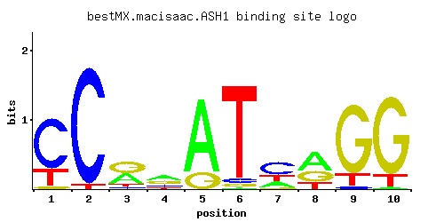

ASH1
YKL185W
Zinc-finger inhibitor of HO transcription; mRNA is localized and translated in the distal tip of anaphase cells, resulting in accumulation of Ash1p in daughter cell nuclei and inhibition of HO expression; potential Cdc28p substrate
Best-performing DNA-binding model.

View and copy the recommended matrices ↘
A | 0.001 0.001 0.391 0.376 0.809 0.006 0.223 0.505 0.001 0.015 C | 0.729 0.960 0.080 0.189 0.001 0.048 0.503 0.002 0.037 0.002 G | 0.039 0.001 0.447 0.342 0.189 0.037 0.037 0.311 0.828 0.851 T | 0.231 0.038 0.082 0.093 0.001 0.909 0.237 0.182 0.134 0.132
A | 0 0 39 37 80 0 22 50 0 1 C | 72 96 8 18 0 4 50 0 3 0 G | 3 0 44 34 18 3 3 31 82 85 T | 23 3 8 9 0 90 23 18 13 13
A | -5.77 -5.77 0.20 0.16 0.93 -3.98 -0.36 0.46 -5.77 -3.06 C | 1.40 1.67 -0.81 0.05 -5.19 -1.32 1.03 -4.50 -1.58 -4.50 G | -1.53 -5.19 0.91 0.64 0.05 -1.58 -1.58 0.55 1.53 1.55 T | -0.33 -2.13 -1.36 -1.24 -5.77 1.04 -0.30 -0.56 -0.87 -0.89
Alternative candidate matrices 4
Historical matrix candidates from the original ScerTF database. Expand a source to inspect its original logo, scores, and matrix values.
ASH1_AFoat et. al.P = 2.57e-05View matrix ↘
ASH1_BFoat et. al.P = 0.2922View matrix ↘
ASH1Harbison et. al.P = 0.08651View matrix ↘
ASH1Morozov et. al.P = 1View matrix ↘
Gene-level annotations and interactions.
Genes bound in ChIP-chip experiments 16 genes
YCR064C, YCR065W, YDR077W, YDR544C, YDR545W, YER152C, YER153C, YER154W, YHR193C, YHR194W, YIL099W, YIL122W, YML133C, YNL289W, YNL338W, YNL339C
Genes affected by TF deletion 72 genes
YHR113W, YKL043W, YOR065W, YAL008W, YOR036W, YOR378W, YBR126C, YHR053C, YHR055C, YOR317W, YDL220C, YMR284W, YPL078C, YBR093C, YBR097W, YDR461W, YDR497C, YFR006W, YIL015W, YIL124W, YIL156W, YDR260C, YHR121W, YER119C, YOL055C, YJR148W, YLR099C, YLR438W, YOL082W, YOL150C, YOR298W, YPL092W, YFL021W, YMR110C, YPL137C, YCL027W, YNL312W, YKR093W, YML131W, YLR042C, YJR033C, YML128C, YMR027W, YML130C, YDR209C, YGR141W, YPL004C, YKL001C, YOL152W, YMR272C, YMR304C-A, YOL151W, YML067C, YNR044W, YBR056W, YCR065W, YDR214W, YGR150C, YHR136C, YOR027W, YBR244W, YGL032C, YKL067W, YLR049C, YLR452C, YLR423C, YDR104C, YMR305C, YNL200C, YPR005C, YGR241C, YLR173W
Genes supported by both experiments 1 genes
YCR065W
Predicted TF–TF partners 3 genes
MBP1, MCM1, SWI6